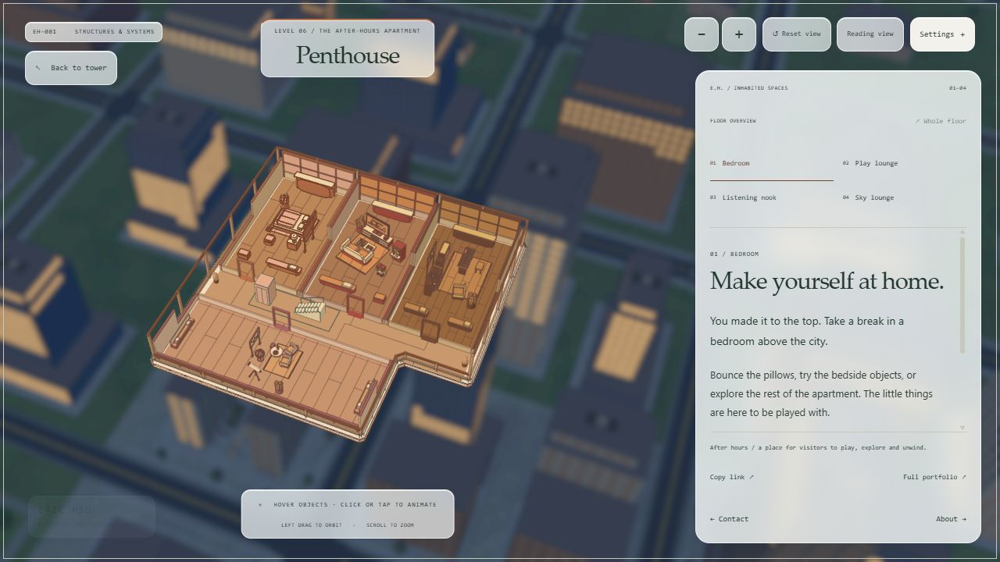
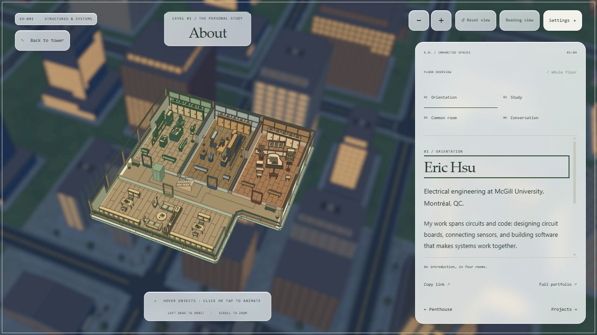
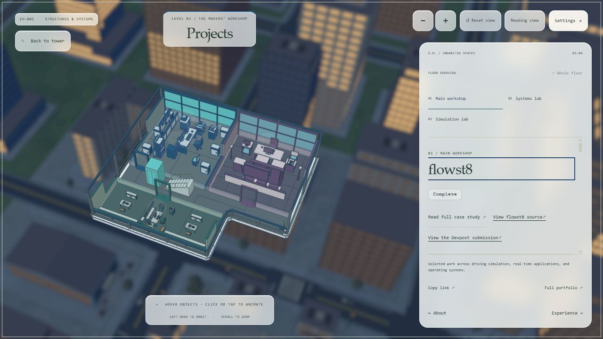
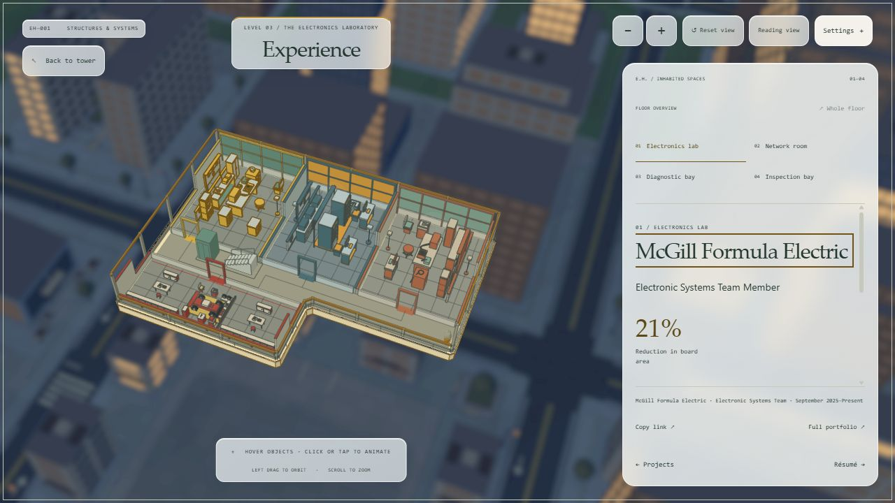
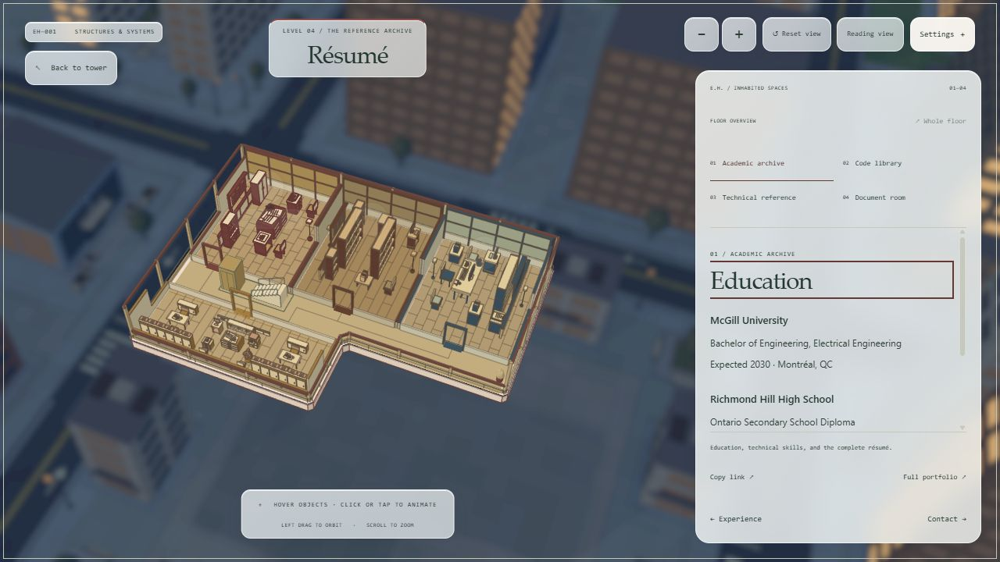
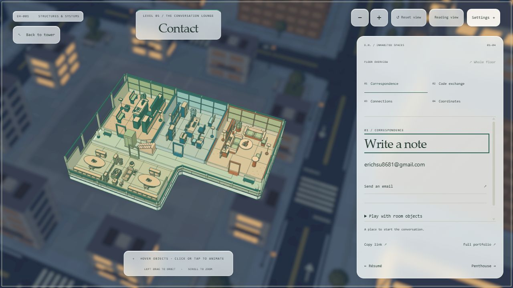

Penthouse
Warm clay, cinnamon oak & soft upholstery

About
Forest green, walnut & collected timber furniture

Projects
Midnight blue, violet & cross-braced metal

Experience
Safety yellow, graphite & workshop utility furniture

Résumé
Burgundy, brass & arched reference-library joinery

Contact
Jade, apricot & rounded café seating
